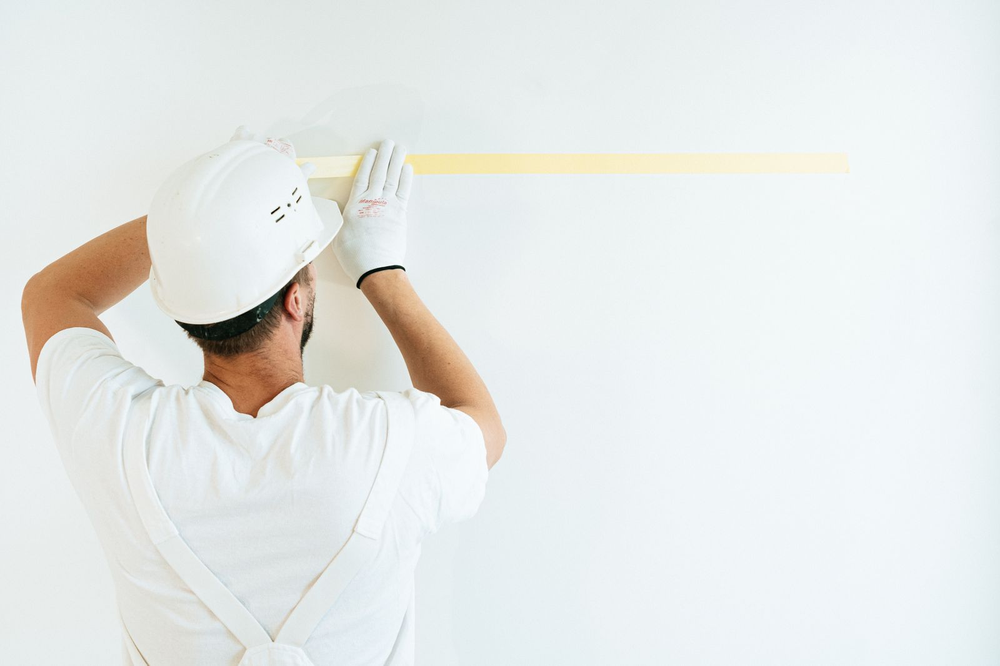
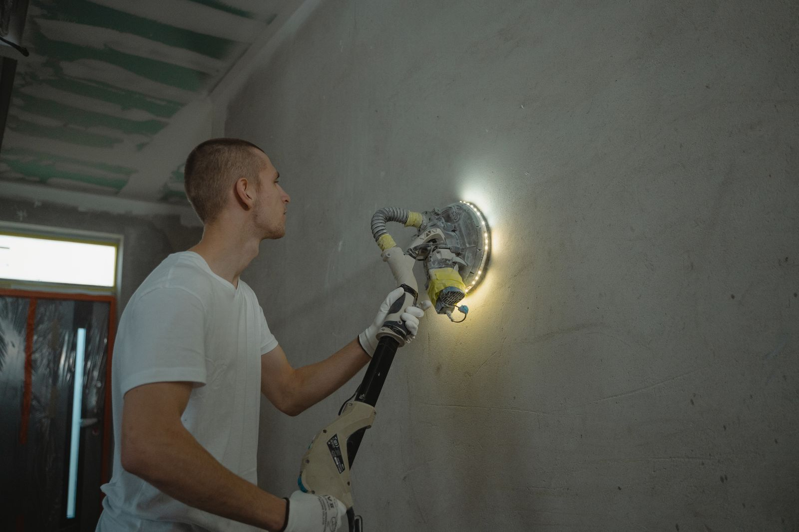

Notes · Interior painting
Interior Painting: How to Tell Good Prep From a Fast Cheap Job
Most paint failure is prep failure. What good preparation looks like, the shortcuts to watch for, and nine questions to ask before you sign. Bridgeview, IL.

About the numbers on this page
Every dollar figure below is a published market range from the sources listed at the end of the post. None of it is a Colors Your Way USA price. Every job is quoted after a walk-through, because the two things that decide the number are the condition of what is already there and how much trim is involved, and neither of those is visible in a photograph.
The photographs on this page are stock. They are placeholders until Mike Walsh’s own job photos are available. Any diagrams are drawn for this post.
Two painters walk your house. One quotes $2,400, one quotes $1,300. The paint costs the same at the store. The rooms are the same size. So where did $1,100 go?
Almost always: prep. Prep is the part you cannot see once the job is done, it is the part that decides whether the finish lasts three years or twelve, and it is the easiest line to quietly delete from a bid. This post is about how to tell the difference before you sign, not eighteen months later when the trim starts letting go.
The core fact, from the federal technical literature
The National Park Service publishes a technical brief on exterior paint failure. It is written for historic woodwork, but the adhesion science is the same on your hallway. The key sentence:
"paint can adhere just as effectively to existing paint as to bare wood, providing the previous coats of paint are also adhering uniformly and tightly to the wood and the surface is properly prepared for repainting: cleaned of dirt and chalk and dulled by sanding."
Read what that actually says. You usually do not need to strip anything. What you need is a surface that is clean, sound and dull. Three conditions. Every one of them is a labor hour, and every one of them is invisible in the finished job.
The same brief is blunt about what happens when you skip it. On peeling: "There is no sense in repainting before dealing with the moisture problems because new paint will simply fail."
What actually causes paint to fail
Here is the failure table. This is the diagnostic your painter should be running before quoting, not after.
| What you see | What it usually is | What it means for the quote |
|---|---|---|
| Peeling down to bare substrate | Moisture behind the film breaking adhesion at the bottom layer | Find and fix the water source first. Painting over it is money set on fire |
| Peeling that stops at another layer of paint | Intercoat failure. Dirty surface, or incompatible paint over paint | Wash, sand, and prime with the right primer |
| Latex peeling off in sheets from old glossy paint | Latex applied over old chalking oil paint, which it "is unable to penetrate ... and adhere" | Oil based primer first, or the new coat comes off |
| Fine cracking in a web pattern | Crazing, aging film that has lost flexibility | Sand and repaint. Catch it here and it stays cheap |
| Deep cracking, alligator pattern | Advanced crazing plus moisture through the cracks | This is now a removal job, not a repaint |
| Wrinkled, sagging film | Applied too thick, or recoated before the first coat dried, or "inadequate brushing out" | An application error. Somebody rushed |
| Small blisters with paint underneath | Solvent blistering, from painting in direct sun | Application error. Not a moisture problem |
| Blisters with bare substrate underneath | Moisture | Different problem, different fix |
| Black or gray speckling in damp corners | Mildew, which needs "shady, warm, moist areas" to live | Kill it and fix the moisture, or it comes straight back through |
Sources: National Park Service Preservation Brief 10.
There is a genuinely useful field test in there for the last one. If you cannot tell mildew from dirt, put a drop of household bleach on it. "Mildew will immediately turn white whereas dirt will continue to look like dirt." That takes four seconds and it changes the whole scope.
The diagram: same wall, two jobs
Why "we include free prep" is not a real sentence
Look at the published labor rates.
| Trade | Published labor rate |
|---|---|
| Drywall repair | from $75 per hour |
| Interior painting, specialty | $75 per hour and up |
| Interior painting, general | $30 to $60 per hour, averaging around $60 |
| Wallpaper removal | $35 to $79 per hour, averaging $58 |
Sources: Thumbtack drywall repair cost, Thumbtack cost to paint a room, This Old House interior painting cost, Thumbtack wallpaper removal cost.
Prep hours bill higher than brush hours. So when a bid is dramatically cheaper, one of two things is true. Either the prep is not in there, or it is in there at a price that guarantees it gets rushed on the day. Neither one is a discount. It is a smaller job wearing the same words.
The honest version is that prep is scoped and stated. On a clean, sound, recently painted room, prep is genuinely light and the price should reflect that. On a 1968 house with nail pops, tobacco staining, a wallpapered dining room and enamel trim from the Carter administration, it is not light, and pretending otherwise is how you get a callback in year two.
The twelve-point walk-through, in order
This is the sequence. If a contractor is not doing most of it, they are not preparing, they are covering.
- Find the water first. Stains on a ceiling, a cold corner, a bathroom with no working fan. Paint does not fix water and water destroys paint.
- Wash. Kitchens carry grease, everything carries dust, bathrooms carry soap film. Nothing bonds to a film of anything.
- Scrape what is loose. To the next sound layer. Not to bare wood as a reflex.
- Patch and fill. Nail pops set and refilled, corner bead dents, cracks cut out rather than skimmed over.
- Sand. Two purposes: flatten the patches, and dull the existing sheen so the next coat has something to key into.
- Caulk. Trim to wall, casing joints, baseboard to wall. This is most of what makes a job look sharp, and it is fast to skip.
- Spot prime. Every patch, every bare spot, every stain. Unprimed patches flash through the finish and you will see them at an angle for the life of the job.
- Full prime where it is needed. Bare drywall, big color change, and any latex going over old oil or chalky paint.
- Deal with bleed-through properly. For tannin bleed and heavy stains, the NPS brief recommends two primer coats for severe cases, with each coat "allowed to dry at least 48 hours." That is a schedule item, not an afternoon.
- Mask and cover. Floors, fixtures, furniture. Drop cloths, not newspaper.
- Two coats, brushed or rolled out properly. Applying too thick and recoating before the first coat has dried are two of the four named causes of wrinkling.
- Cut-in and lines. Straight lines are the last five percent of the labor and the first thing every visitor sees.

Nine questions to ask, and the answers that should worry you
| Ask this | A good answer sounds like | A bad answer sounds like |
|---|---|---|
| "How many coats, and is primer separate?" | "Two finish coats. Primer on patches and on the trim, and full prime in the dining room because of the color change." | "Two coats." Full stop |
| "What are you doing about the nail pops?" | "Set them, fill twice, sand, spot prime." | "The paint will cover it" |
| "Is this trim oil or latex?" | "Let me check with a solvent rag." | Shrug |
| "What primer, by name?" | A specific product for the specific problem | "Whatever they have" |
| "How are you handling the wallpaper in the back room?" | Removal, adhesive wash, skim, prime | "We can paint right over it" |
| "The house is from 1970. What is your EPA lead-safe firm certification number?" | A number, given without hesitation | "That is not really a thing for painting" |
| "How long between coats?" | A time, tied to the product data sheet and the room conditions | "We do it all in one day" on a job that cannot be done in one day |
| "Who moves the furniture and who covers the floors?" | A clear answer either way, in the quote | "We will figure it out" |
| "What is not included?" | A real list | "Everything is included" |
That sixth one deserves a note. The EPA requires that anyone paid to disturb painted surfaces in homes built before 1978 be certified, and states that this "includes all firms, even sole proprietorships." The median house in Bridgeview was built in 1975, in Oak Lawn 1967, in Burbank 1965, in Evergreen Park 1955. In this area, that question is not a technicality. It applies to most of the housing.
One more thing: paint has a thickness limit
This surprises people. From the same NPS brief: when paint builds up to about 1/16 of an inch, roughly 16 to 30 layers, "one or more extra coats of paint may be enough to trigger cracking and peeling." Thick paint fails at its weakest point, which is the oldest layer against the wood.
On interior trim in a house that has been repainted every decade since 1965, that is a real condition. It is why heavy old trim sometimes needs stripping rather than another coat, and it is why a painter who looks closely at your casing before quoting is doing you a favor even if the number goes up.
The short version
- Almost all paint failure is moisture or surface preparation, not the paint.
- Clean, sound and dull. That is the whole standard, and each word is billable labor.
- Prep hours cost more than brush hours, so the cheap bid is a smaller job, not a better deal.
- Ask for the prep scope in writing and ask what is excluded.
- On any pre-1978 house here, ask for the EPA lead-safe firm certification number.
We are in Bridgeview at 7900 W. 83rd St. If you want somebody to actually look at the walls before putting a number on them, call 708-935-4289.
More on this: interior painting and drywall repair and painting. For what the numbers look like, read what interior painting costs in the southwest suburbs. For the outside of the house, read exterior painting in the Chicago climate.
References
- National Park Service, Preservation Brief 10: Exterior Paint Problems on Historic Woodwork. https://www.nps.gov/orgs/1739/upload/preservation-brief-10-paint-problems-exterior-woodwork.pdf
- National Park Service, Preservation Briefs index. https://www.nps.gov/orgs/1739/preservation-briefs.htm
- Thumbtack, Drywall Repair Cost. https://www.thumbtack.com/p/drywall-repair-cost
- Thumbtack, Cost to Paint a Room. https://www.thumbtack.com/p/cost-to-paint-a-room
- Thumbtack, Wallpaper Removal Cost. https://www.thumbtack.com/p/wallpaper-removal-cost
- This Old House, Interior Painting Cost. https://www.thisoldhouse.com/painting/reviews/interior-painting-cost
- U.S. Environmental Protection Agency, Lead Renovation, Repair and Painting Program. https://www.epa.gov/lead/lead-renovation-repair-and-painting-program
- U.S. Census Bureau, American Community Survey 5-year estimates, 2023, table B25035. https://www.census.gov/programs-surveys/acs
See our interior painting page
Related